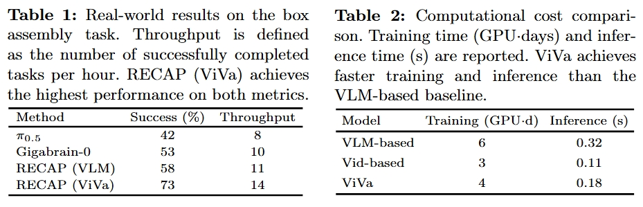

Example 1
Example 2
Example 3
Example 4
Vision-language-action (VLA) models have advanced robot manipulation through large-scale pretraining, but real-world deployment remains challenging due to partial observability and delayed feedback. Reinforcement learning addresses this via value functions, which assess task progress and guide policy improvement. However, existing value models built on vision-language models (VLMs) struggle to capture temporal dynamics, undermining reliable value estimation in long-horizon tasks.
In this paper, we propose ViVa, a video-generative value model that repurposes a pretrained video generator for value estimation. Taking the current observation and robot proprioception as input, ViVa jointly predicts future proprioception and a scalar value for the current state. By leveraging the spatiotemporal priors of a pretrained video generator, our approach grounds value estimation in anticipated embodiment dynamics, moving beyond static snapshots to intrinsically couple value with foresight.
Integrated into RECAP, ViVa delivers substantial improvements on real-world box assembly. Qualitative analysis across all three tasks confirms that ViVa produces more reliable value signals, accurately reflecting task progress. By leveraging spatiotemporal priors from video corpora, ViVa also generalizes to novel objects, highlighting the promise of video-generative models for value estimation.
ViVa repurposes a pretrained video generator as a value function for robotic reinforcement learning. By leveraging the spatiotemporal priors learned from large-scale video corpora, our model captures rich dynamics about how scenes evolve over time. Taking the current observation together with robot proprioception as input, ViVa jointly predicts future proprioception and a scalar value for the current state.

Grounding value estimation in anticipated embodiment dynamics enables ViVa to incorporate predictive structure beyond static snapshots, intrinsically coupling value with foresight. This design provides more reliable value signals for advantage computation, leading to improved policy optimization in robotic manipulation tasks.
We demonstrate ViVa on three in-domain manipulation tasks: Box Packaging, Paper Organizing, and Shirt Folding. ViVa produces reliable value signals that accurately track task progress throughout each rollout.
Example 1
Example 2
Example 3
Example 4
We further evaluate ViVa on Pants Folding, a task involving novel objects unseen during training. By leveraging spatiotemporal priors from large-scale video corpora, ViVa generalizes effectively to this out-of-domain setting, demonstrating robust value estimation beyond the training distribution.
Example 1
Example 2
Example 3
Example 4

Videos played at 2× speed
@article{viva2026,
title={ViVa: A Video-Generative Value Model for Robot Reinforcement Learning},
author={Lv, Jindi and Li, Hao and Li, Jie and Nie, Yifei and Kong, Fankun and Wang, Yang and Wang, Xiaofeng and Zhu, Zheng and Ni, Chaojun and Deng, Qiuping and Li, Hengtao and Lv, Jiancheng and Huang, Guan},
year={2026}
}